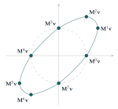

STEP II 2020，第 6 题
继续之前，请先阅读题目（原题为英文）。题目载于 OCR 提供下载的 2020 年 STEP 试卷（zip 文件）内的 STEP II 试卷： www.ocr.org.uk/Images/696589-2020-past-papers.zip
引子
有些变换（transformation）只要重复足够多次，就会令一切回到原位。旋转 \(90^\circ\) 要四步，反射则只要两步。哪些 \(2 \times 2\) 矩阵（matrix）具有这种性质，即对某个 \(n\) 有 \(\mathbf{M}^n = \mathbf{I}\)？又怎样判断？
这道题令人意外之处，在于只需两个数就足以判定：迹（trace）和行列式（determinant）。你不必知道那四个元素，只需知道 \(a + d\) 和 \(ad - bc\)。而且答案对现实世界有一个惊人的推论：它解释了为甚么晶体可以有 \(2\) 重、\(3\) 重、\(4\) 重和 \(6\) 重对称，却永远没有 \(5\) 重对称。这条晶体学“定律”屹立了两个世纪，直至 1982 年的一项发现才被打破，而该发现更赢得了诺贝尔奖。
动笔之前
每个 \(2 \times 2\) 矩阵都满足 \(\mathbf{M}^2 - (\operatorname{tr}\mathbf{M})\mathbf{M} + (\det\mathbf{M})\mathbf{I} = \mathbf{0}\)（这是凯莱－哈密顿定理（Cayley–Hamilton theorem）；把它乘开来验证一下）。这对处理有关 \(\mathbf{M}^2\) 的问题有甚么帮助？
它把 \(\mathbf{M}^2\) 用 \(\mathbf{M}\) 和 \(\mathbf{I}\) 表示出来：\(\mathbf{M}^2 = t\mathbf{M} - d\mathbf{I}\)，其中 \(t = \operatorname{tr}\mathbf{M}\)，\(d = \det\mathbf{M}\)。于是，关于 \(\mathbf{M}^2\) 的条件就变成一个把 \(\mathbf{M}\)、\(t\) 和 \(d\) 联系起来的条件。这就是整道题的关键。
逐步解题
阶段 1 平方的迹
\(\mathbf{M}^2 = \begin{pmatrix} a^2 + bc & ab + bd \\ ac + cd & bc + d^2 \end{pmatrix}\)，所以 \(\operatorname{tr}(\mathbf{M}^2) = a^2 + 2bc + d^2 = (a + d)^2 - 2(ad - bc)\)。■
阶段 2 \(\pm\mathbf{I}\) 的平方根
假设 \(\mathbf{M}^2 = \mathbf{I}\)。把它代入 \(\mathbf{M}^2 = t\mathbf{M} - d\mathbf{I}\)。若 \(t \neq 0\)，这说明 \(\mathbf{M}\) 是怎样的矩阵？
若 \(\mathbf{M}^2 = \mathbf{I}\)，则 \(\mathbf{I} = t\mathbf{M} - d\mathbf{I}\)，所以 \(t\mathbf{M} = (1 + d)\mathbf{I}\)。若 \(t \neq 0\)，则 \(\mathbf{M}\) 是 \(\mathbf{I}\) 的倍数，设为 \(c\mathbf{I}\)，而 \(c^2 = 1\)，所以 \(\mathbf{M} = \pm\mathbf{I}\)，但这已被排除。因此 \(t = 0\)，于是 \((1 + d)\mathbf{I} = \mathbf{0}\)，所以 \(d = -1\)。
反过来，若 \(t = 0\) 且 \(d = -1\)，则 \(\mathbf{M}^2 = t\mathbf{M} - d\mathbf{I} = \mathbf{I}\)，而且 \(\mathbf{M} \neq \pm\mathbf{I}\)，因为 \(\operatorname{tr}(\pm\mathbf{I}) = \pm2 \neq 0\)。■
至于 \(\mathbf{M}^2 = -\mathbf{I}\)：代入后得 \(t\mathbf{M} = (d - 1)\mathbf{I}\)。若 \(t \neq 0\)，则 \(\mathbf{M} = c\mathbf{I}\)，其中 \(c^2 = -1\)，这对实数 \(c\) 是不可能的。所以 \(t = 0\) 且 \(d = 1\)。反过来，由 \(t = 0\) 和 \(d = 1\) 可得 \(\mathbf{M}^2 = -\mathbf{I}\)。■
阶段 3 四次方根
设 \(\mathbf{N} = \mathbf{M}^2\)，则 \(\mathbf{M}^4 = \mathbf{I}\) 即是 \(\mathbf{N}^2 = \mathbf{I}\)。根据第 (ii) 部分，要么 \(\mathbf{N} = \pm\mathbf{I}\)，要么 \(\operatorname{tr}\mathbf{N} = 0\) 且 \(\det\mathbf{N} = -1\)。为甚么第二种情况不可能发生？
\(\det\mathbf{N} = \det(\mathbf{M}^2) = (\det\mathbf{M})^2 \geq 0\)，所以 \(\det\mathbf{N} \neq -1\)。因此 \(\mathbf{N} = \mathbf{M}^2 = \pm\mathbf{I}\)。逆命题显然成立。■
至于 \(\mathbf{M}^4 = -\mathbf{I}\)：把第 (ii) 部分应用于 \(\mathbf{N} = \mathbf{M}^2\)，可知它成立当且仅当 \(\operatorname{tr}(\mathbf{M}^2) = 0\) 且 \(\det(\mathbf{M}^2) = 1\)，即 \(t^2 - 2d = 0\) 且 \(d^2 = 1\)。由于 \(t^2 = 2d \geq 0\)，必须有 \(d = 1\)，于是 \(t^2 = 2\)。所以 \[\mathbf{M}^4 = -\mathbf{I} \iff \det\mathbf{M} = 1 \text{ 且 } \operatorname{tr}\mathbf{M} = \pm\sqrt2. \qed\]
阶段 4 一个不是旋转的 \(\mathbf{I}\) 的八次方根
任何满足 \(\mathbf{M}^4 = -\mathbf{I}\) 的矩阵都有 \(\mathbf{M}^8 = \mathbf{I}\)。旋转 \(45^\circ\) 的矩阵的迹是 \(\sqrt2\)，行列式是 \(1\)；我们想找另一个迹和行列式都相同、但不是旋转的矩阵。取 \[\mathbf{M} = \begin{pmatrix} \sqrt2 & -1 \\ 1 & 0 \end{pmatrix}, \qquad \operatorname{tr}\mathbf{M} = \sqrt2, \quad \det\mathbf{M} = 1.\] 根据第 3 步，\(\mathbf{M}^4 = -\mathbf{I}\)，所以 \(\mathbf{M}^8 = \mathbf{I}\)。但 \(\mathbf{M}\) 既不是旋转也不是反射，因为旋转和反射都保持长度不变，而 \(\mathbf{M}\begin{pmatrix} 1 \\ 0 \end{pmatrix} = \begin{pmatrix} \sqrt2 \\ 1 \end{pmatrix}\) 的长度是 \(\sqrt3 \neq 1\)。■

回顾
凯莱－哈密顿定理把幂化为线性组合（linear combination）。\(2 \times 2\) 矩阵的每一个幂都是 \(\mathbf{M}\) 和 \(\mathbf{I}\) 的组合，其系数只取决于迹和行列式。
平方的行列式是非负的。这个简单的事实在第 (iii) 部分排除了一整种情况。
迹和行列式是不变量（invariant）。两个迹和行列式都相同的矩阵（且都不是 \(\mathbf{I}\) 的倍数），不论外表是否相似，取幂时的表现都一样。
背后的数学
为甚么说第 4 步的 \(\mathbf{M}\) 是“伪装了的旋转”？若存在可逆（invertible）矩阵 \(\mathbf{S}\) 使得 \(\mathbf{M} = \mathbf{SRS}^{-1}\)，则称两个矩阵 \(\mathbf{M}\) 和 \(\mathbf{R}\) 相似（similar）：它们在不同的坐标下表示同一个变换。相似矩阵有相同的迹和行列式，而且（对于不是 \(\mathbf{I}\) 的倍数的 \(2 \times 2\) 矩阵）逆命题也成立。所以任何迹为 \(\sqrt2\)、行列式为 \(1\) 的实矩阵都与 \(45^\circ\) 的旋转相似，而在 \(\mathbf{S}\) 所给出的斜坐标下，它就只是在旋转（图 7.4.1）。一般而言，满足 \(\mathbf{M}^n = \mathbf{I}\) 的 \(2 \times 2\) 实矩阵必定与某个旋转或反射相似。
为甚么晶体没有五重对称
晶体是原子有规律、重复的排列。晶体的旋转对称把原子所成的格（lattice）映射到它自身，所以在以这个格为基础的坐标下，它由一个元素全是整数的矩阵给出。因此它的迹是整数。但是旋转角为 \(\theta\) 的旋转，在任何坐标下的迹都是 \(2\cos\theta\)，而 \(2\cos\theta\) 只有在等于 \(-2, -1, 0, 1\) 或 \(2\) 时才是整数，也就是对应阶（order）为 \(2\)、\(3\)、\(4\) 和 \(6\)（以及 \(1\)）的旋转。五重对称需要 \(2\cos72^\circ = \frac{\sqrt5 - 1}{2}\)，而这不是整数。这就是晶体学限制定理（crystallographic restriction theorem）。1982 年，Dan Shechtman 观察到一种看似具有五重对称的合金，起初还遭人嘲笑；后来才知道那是一种准晶体（quasicrystal），有序但没有周期性，就像彭罗斯铺砖（Penrose tilings）一样，因此不在该定理的涵盖范围之内。他于 2011 年获颁诺贝尔化学奖。
思维技巧
当题目涉及一个有很多参数的对象时，问问自己：是否只需这些参数的几个组合，即那些转换观点后仍然不变的组合，就已经足够？
在这里，四个元素化约为两个不变量，即迹和行列式，因为这个问题（“\(\mathbf{M}^n = \mathbf{I}\) 是否成立？”）并不取决于坐标。找到合适的不变量，往往是解决分类问题的关键。
延伸练习
三阶的旋转。试做 STEP II 2021，第 7 题 （载于 OCR 提供下载的 2021 年试卷 zip 文件内）。它从一个具有不寻常性质的旋转矩阵出发，最后得出一个结论，适用于所有立方为单位矩阵（identity matrix）的 \(2 \times 2\) 实矩阵。
六阶。求迹和行列式须满足的条件，使得 \(\mathbf{M}^6 = \mathbf{I}\)，但 \(\mathbf{M}^2 \neq \mathbf{I}\) 且 \(\mathbf{M}^3 \neq \mathbf{I}\)。
晶体学限制。证明：若 \(\mathbf{M}\) 的元素全是整数，\(\det\mathbf{M} = 1\)，且对某个 \(n\) 有 \(\mathbf{M}^n = \mathbf{I}\)，则 \(\operatorname{tr}\mathbf{M} \in \{-2, -1, 0, 1, 2\}\)。找出一个阶为 \(6\) 的整数矩阵。
以凯莱－哈密顿定理求幂。利用 \(\mathbf{M}^2 = t\mathbf{M} - d\mathbf{I}\)，把 \(\mathbf{M}^3\) 和 \(\mathbf{M}^4\) 表示成 \(p\mathbf{M} + q\mathbf{I}\) 的形式，并借此重新推导 \(\mathbf{M}^4 = -\mathbf{I}\) 的条件。
延伸阅读
M. A. Armstrong, Groups and Symmetry（Springer）。内容包括晶体学限制和墙纸图案的分类。
Marjorie Senechal, Quasicrystals and Geometry（Cambridge University Press）。准晶体与非周期有序结构的数学。
Gilbert Strang, Introduction to Linear Algebra（Wellesley-Cambridge）。相似矩阵与凯莱－哈密顿定理。